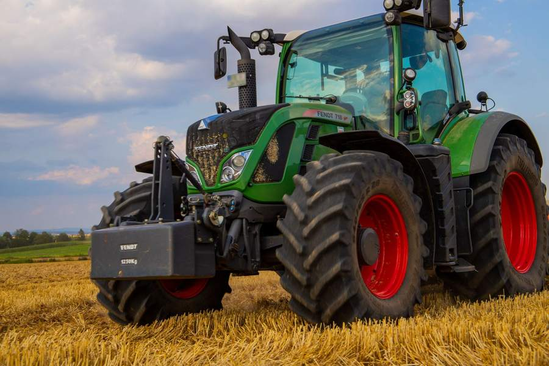
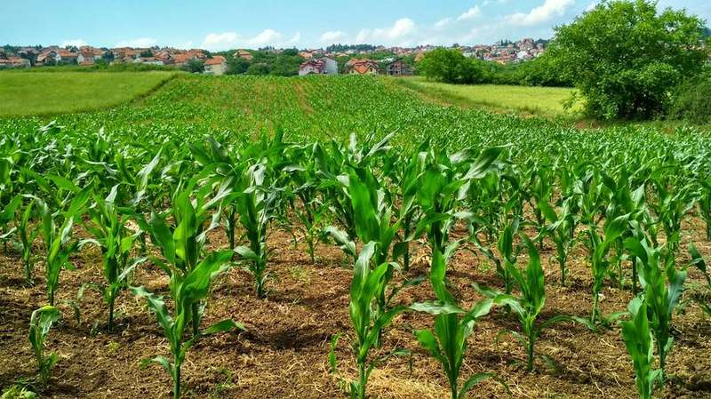
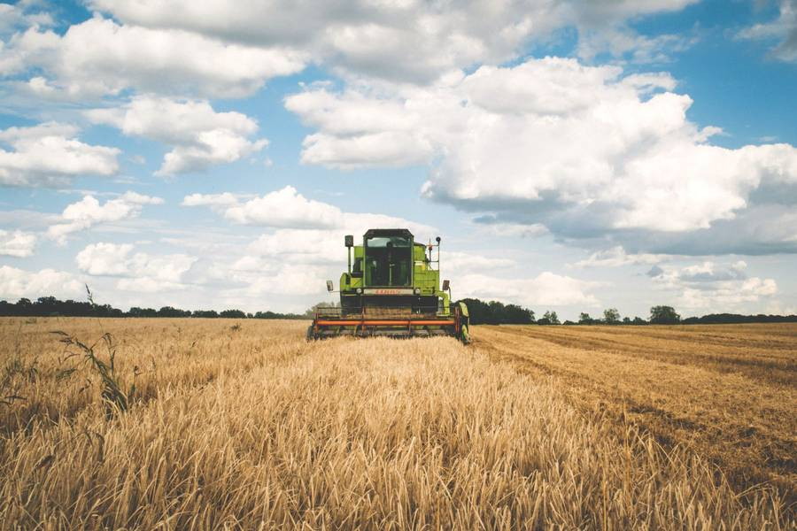

Ele abre o Google e o Maps ainda na estrada. Se a sua empresa não está ali, com clareza, a ligação vai para quem está.
Sites para o agronegócio
Encontrada na busca. Acreditada antes da ligação.
A DevBrasil faz o site de quem vende para o produtor: revenda, peças, máquinas, sementes, nutrição animal e cerealista. Ele abre no celular, entende a casa e chama no WhatsApp.
- Sorriso
- Rio Verde
- Luís Eduardo Magalhães
- Dourados
O que acontece hoje
O produtor pesquisa no Google antes de ligar. Quem não aparece perde o cliente.
O concorrente da BR, com catálogo, prazo e WhatsApp, leva o clique. Quem só tem placa espera ser lembrado.
Foto de estoque não responde dose, código de peça nem parcela. Sem site, a conversa morre no direct.
O produtor confia em quem mostra o que vende, para qual cultura e em quanto tempo chega. Silêncio na busca parece casa pequena demais para a safra dele.
Serviços
O que entra no site da sua empresa.
Sites premium
Página com a cara da sua casa, não um tema genérico de loja. Tipo, foto e texto no tom de quem atende o produtor.
Catálogo de produtos
O que você vende, para qual cultura ou máquina, com ficha que o gerente entende sem ligar para perguntar o básico.
Integração com WhatsApp
Cada botão abre a conversa certa, com a mensagem já escrita. O produtor não procura o número no rodapé.
Google e Maps
Sua empresa encontrada na busca e no mapa, com endereço, horário e o que você faz. Quem pesquisa, acha.
Instagram levando para o site
O perfil apresenta. O site explica, mostra o catálogo e recebe o contato. O caminho deixa de morrer no direct.
Cases
Seis sites para abrir e usar.
Uma demonstração por ramo. Toque no case: o site abre em tela cheia, do jeito que o produtor veria no celular.
Marcas, pessoas e números destes cases são fictícios. Servem para mostrar o nível, não a empresa do vizinho.

Insumos · Sorriso, MT
Várzea Insumos
Calculadora de dose por hectare
O produtor informa a área e vê litro e bombona antes de pedir. A ficha responde o que o balcão repetia no telefone.
Abrir em tela cheiaPeças · Rio Verde, GO
Eixo Peças
Busca por máquina e sistema
Código, aplicação e se a peça sai hoje. O site diz o prazo antes da viagem até a cidade.
Abrir em tela cheia
Máquinas · Luís Eduardo Magalhães, BA
Planalto Máquinas
Simulador de parcela
Financiamento ou consórcio, em parcela ilustrativa. A conversa com o banco começa com número, não com folheto.
Abrir em tela cheia
Nutrição animal · Dourados, MS
Cocho Cheio
Cálculo de suplemento do lote
Seca ou águas, cabeças e consumo. A conta sai em sacos por mês, a linguagem do cocho.
Abrir em tela cheia
Sementes · Rio Verde, GO
Linha Fértil
Calendário de plantio
Janela, ciclo e população por cultura. A variedade certa aparece na época em que o produtor decide.
Abrir em tela cheia
Cerealista · Sorriso, MT
Silos do Vereda
Cotação do dia e mapa de recebimento
O produtor vê a praça e onde descarregar. Menos fila imaginada, mais hora marcada.
Abrir em tela cheiaProcesso
Da ligação ao site no ar.
-
01 · Ligação
Você conta a casa
O ramo, a cidade e o que o produtor pergunta toda semana. É isso que o site precisa responder.
-
02 · Prévia grátis
Você decide olhando
Eu devolvo um site com a cara da sua empresa. Sem preço nesta página e sem contrato para ver.
-
03 · Ajustes
Entra o que é seu
Nome, catálogo, fotos e o texto do WhatsApp. A prévia vira a sua casa, não um modelo de prateleira.
-
04 · Site no ar
O link atende de noite
Publica. O produtor abre no celular quando o balcão já fechou e chama no WhatsApp com a pergunta certa.
Diferenciais
Feito para o ramo, não para um tema pronto.
A ferramenta muda com a casa
Dose por hectare, busca de peça, parcela, cocho, calendário de plantio ou cotação. O site faz o trabalho que o balcão repetia.
Rápido no celular
Pouco peso, tipo grande, botão de WhatsApp à mão. A página aguenta o sinal da vicinal.
Sem tabela de preço genérica
A condição sai do tamanho da sua operação. A prévia existe para essa conversa começar com algo para olhar.
A demonstração não é a sua marca
Os cases são fictícios. A prévia nasce do seu nome, da sua cidade e do que você vende.
Ilustrativos
O tom da conversa.
Pessoas fictícias, para mostrar como o dono descreve o site. Não são clientes da DevBrasil.
“Abri o site no pátio e vi a dose em bombona. Meu gerente não precisou refazer a conta.”
“Parei de mandar o produtor perguntar no direct se a peça tinha. O site já diz se sai hoje.”
“A prévia chegou com o nome da minha casa, não com um modelo de cidade grande.”
Dúvidas
Antes da mensagem.
Sim. A prévia existe para você decidir olhando. Não há contrato para ver.
Não. São marcas, pessoas e depoimentos fictícios, para mostrar o nível sem usar o nome de um concorrente.
Não. A prévia sai com o que você tiver. Logo, equipe e catálogo real entram quando você aprovar o caminho.
Sim. O desenho começa por essa tela. O link chega no WhatsApp e abre no telefone.
Sim. Botão de WhatsApp, presença pensada para o Google e o Maps, e o Instagram apontando para o site.
Não. A conversa por vídeo é o próximo passo, se a prévia fizer sentido para a sua operação.
Próximo passo
Quero uma prévia do meu site.
Manda uma mensagem. Eu te devolvo uma prévia com a cara da sua empresa, para você decidir olhando, não imaginando.
Quero uma prévia do meu site